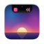

Música que se ve
Isla sigue lo que suene en Música, Spotify, Podcasts o tu navegador. Portada, controles, barra para adelantar y letras sincronizadas. Desliza de lado sobre el notch para cambiar de canción.


IslaMúsica, archivos, calendario y actividades en vivo justo debajo de tu cámara. Nativa, en Liquid Glass, gratis y de código abierto.
Esto es Isla de verdad, capturada en un MacBook Pro. Abre el Nook, cambia de pestaña o dispara una actividad en vivo.


Isla sigue lo que suene en Música, Spotify, Podcasts o tu navegador. Portada, controles, barra para adelantar y letras sincronizadas. Desliza de lado sobre el notch para cambiar de canción.
Arrastra archivos al notch y quedan en la Bandeja para soltarlos donde quieras. Envíalos por AirDrop o conviértelos a PNG, JPEG, HEIC, PDF, MP4 o ZIP. ¿Lejos del notch? Agita el puntero y aparece un Bolsillo.

Lee los calendarios que ya tienes en el Mac (iCloud, Google, Exchange) y te avisa antes de cada reunión con un botón para unirte. Las tareas se sincronizan con Recordatorios.

Historial del portapapeles con búsqueda, filtros y elementos fijados. Haz clic para pegar. Lo que copias desde gestores de contraseñas nunca se guarda.

Pomodoro, varios temporizadores a la vez, cronómetro y ruido marrón generado en tu Mac. Y un teleprompter justo bajo el lente que avanza a tu ritmo o sigue tu voz.

El notch te avisa de la canción que empieza, la carga de tu Mac, tus AirPods con su batería, el volumen y el brillo, tus descargas, tu próxima reunión y hasta el Bloq Mayús.
Primero, descarga el .dmg y arrastra Isla a Aplicaciones.
Luego, el recorrido de bienvenida te deja activar solo los permisos que quieras.
Después, lleva el puntero al notch o pulsa ⌃⌥Espacio desde cualquier app.
Escrita en Swift y SwiftUI, con el Liquid Glass de macOS, SF Symbols, respuesta háptica y Ajustes que se sienten de casa. Elige vidrio o negro clásico, el tamaño del panel, las pestañas y los widgets. En español y en inglés.


Isla es libre y de código abierto bajo la licencia MIT. Sin cuentas, sin analíticas, sin suscripciones. Tus notas, tu Bandeja y tu portapapeles se quedan en tu Mac. Lee el código, propón mejoras o crea tu propia versión.
Diseñada y desarrollada por Kyros Solutions RD en Santo Domingo, en una isla del Caribe. De ahí el nombre.
Ver en GitHubgit clone https://github.com/Kyros-Solutions-RD/isla.git
cd isla
brew install xcodegen
xcodegen generate
open Isla.xcodeproj
Sí. Todas las funciones son gratis, para siempre, sin prueba ni suscripción. El código está en GitHub bajo la licencia MIT.
Cualquier Mac con macOS 26 Tahoe o posterior. Isla usa el Liquid Glass del sistema, por eso requiere Tahoe. Funciona en Mac con Apple silicon y con Intel.
Isla dibuja una isla equivalente en la parte superior de cualquier pantalla, incluidos los monitores externos. Tú eliges en qué pantallas aparece.
Con cualquier app que aparezca en «Reproduciendo» del Centro de control: Música, Spotify, Podcasts, YouTube en el navegador y más. Las letras vienen de LRCLIB, una base de datos abierta.
Solo los que tú actives: Calendario, Recordatorios, Cámara para el Espejo, Ubicación para el clima, Micrófono para el teleprompter y Accesibilidad para reemplazar el indicador de volumen. Nada sale de tu Mac salvo la consulta del clima, con ubicación aproximada, y la búsqueda de letras.
Las versiones de la comunidad se firman sin un certificado de pago. Haz clic derecho en Isla, elige Abrir y confirma. O compílala tú desde el código fuente en un par de minutos.

Gratis, sin cuentas. Abre el .dmg, arrastra Isla a Aplicaciones y lleva el puntero al notch.